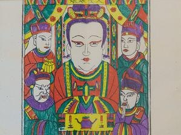
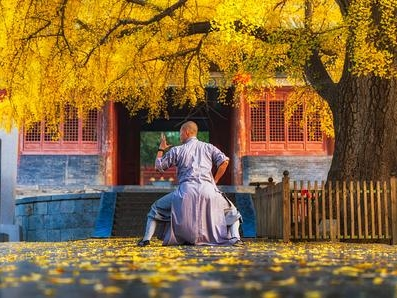
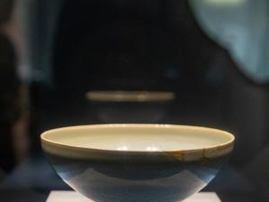
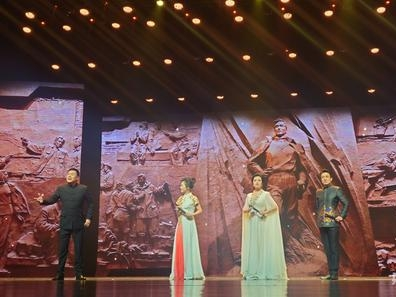

国家级代表性非遗项目
豫剧
豫剧又称河南梆子，是中国五大戏曲剧种之一，发源于河南开封，唱腔铿锵大气、抑扬有度，表演质朴通俗，代表剧目有《穆桂英挂帅》《花木兰》等。
传统戏剧

朱仙镇木版年画
朱仙镇木版年画是中国木版年画的鼻祖，始于唐，兴于宋，以构图饱满、线条粗犷、色彩艳丽著称，题材多为门神、瑞兽、戏曲故事。
传统美术

少林功夫
少林功夫发源于登封嵩山少林寺，是中国武术的重要流派，以刚劲有力、禅武合一为特色，包含拳术、器械、功法等数百种技艺。
传统体育
唐三彩烧制技艺
唐三彩是唐代低温彩釉陶器的总称，以洛阳为主要产地，以黄、绿、白三色为主，造型生动，釉色绚丽，烧制技艺包含选料、制坯、施釉、烧制等多道工序。
传统技艺

钧瓷烧制技艺
钧瓷产于禹州神垕镇，是宋代五大名瓷之一，以“入窑一色，出窑万彩”的窑变效果著称，烧制技艺复杂，被誉为“中国五大名瓷之首”。
传统技艺

河南坠子
河南坠子是河南本土的传统曲艺形式，以坠胡为主要伴奏乐器，唱腔婉转悠扬，题材多为民间故事、历史传说，流行于河南及周边地区。
传统音乐